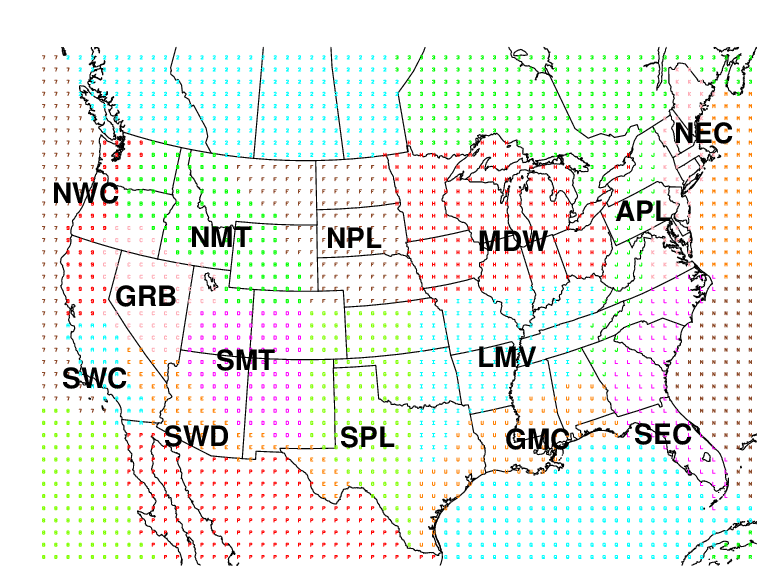

The site displays verifications of global NWP forecasts against
1) surface observations of T2m, RH2m amd wind at 10m over the Continental United Stats
and the Alaska region, and 2) upper-air observations of T, RH and Wind from rawinsonde, dropsonde,
and profilers over the global and its subregions.
Sub-regions over the Globe for upper-air verification
GGLB: Globe;
GNH: Nothern Hemisphere: 20N-90N;
GSH: Southern Hemisphere: 20S-90S;
GTRP: Tropics: 20S-20N;
G236: CONUS (Lambert Conformal);
GEUR: Europe 15W-45E, 30N-70N;
GASI: Asia 60E-145E, 5N-65N;
GAFR: Africa 20W-55E, 30S-30N;
GSA: South America 90W-35W, 50S-15N;
GNA: North America 145W-50W,25N-60N;
GAUS: Australia 105E-165E,45S-0N.
Sub-regions over the CONUS for surface verification
West: NWC, SWC, GRB, NMT, SMT, SWD, NPL, SPL
East: MDW, APL, LMV, GMC, SEC, NEC
Southwest: SWC,SMT, SWD,GRB
Northwest: NWC, NMT
Northern Great Plains and Mid-West NPL, MDW
Southern Great Plains: SPL
Northeast: NEC, APL
Southeast: SEC, GMC, LMV
Alaska: NAK, SAK
